Visual Semantics
Users describe scenes in natural language. The system needs embeddings that can map text queries to keyframes.
A media search system is only useful when it returns the exact timestamp where something happens. Text search alone misses visual concepts. Vector search alone misses exact speech and object constraints. AIC combines visual embeddings, object detections, transcripts, audio fingerprints, temporal logic, and shot metadata into a single retrieval workflow.
Media archives are hard because intent can be visual, spoken, object-based, temporal, or auditory. “A man opens a red door after a dog runs past” is not just a text query. It is a sequence of visual events. “Someone says climate policy” is transcript search. “Find the same audio clip” is fingerprint search. A useful system must handle all of them.
Users describe scenes in natural language. The system needs embeddings that can map text queries to keyframes.
Some queries require exact object filters: class labels, confidence thresholds, and instance counts.
The result must map back to FPS, shot boundaries, HLS playback, and evaluation timestamps.
| Decision | Why | Rejected Alternative | Trade-off |
|---|---|---|---|
| Milvus for visual vectors | CLIP/BEIT3 keyframe vectors need fast approximate nearest-neighbor search. | Store vectors in MongoDB. | Requires vector index lifecycle and model/version discipline. |
| CLIP + BEIT3 fusion | Different vision-language models catch different semantics; fusion reduces single-model brittleness. | Use one embedding model only. | More memory and ingestion complexity. |
| MongoDB for objects | Object detections are structured arrays with labels, confidence, and bounding boxes. | Flatten object labels into text. | Requires aggregation logic for count/confidence constraints. |
| Elasticsearch for transcripts | Speech queries benefit from fuzzy and phrase matching, not vector semantics alone. | Only semantic video search. | Requires timestamp-to-keyframe alignment. |
| Temporal search | Some answers are event sequences, not isolated frames. | Return independent top-k hits. | Requires anchor query and max-frame-gap logic. |
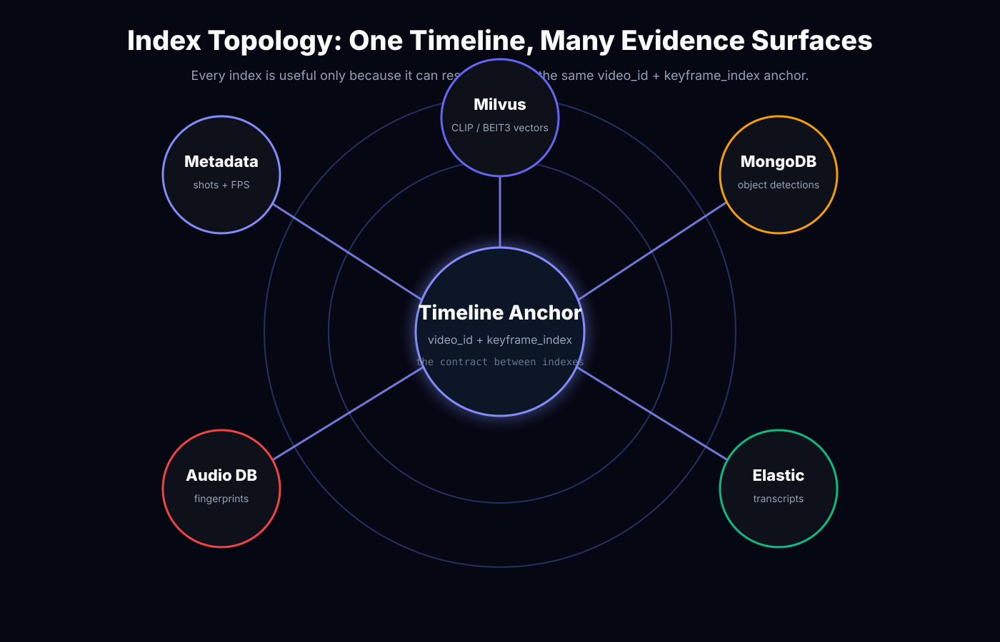
The ingestion process loads keyframe embeddings into Milvus, object detections into MongoDB, transcripts into Elasticsearch, and audio fingerprints from HLS segments via FFmpeg. The key engineering concern is alignment: every signal must map back to the same video/keyframe timeline.
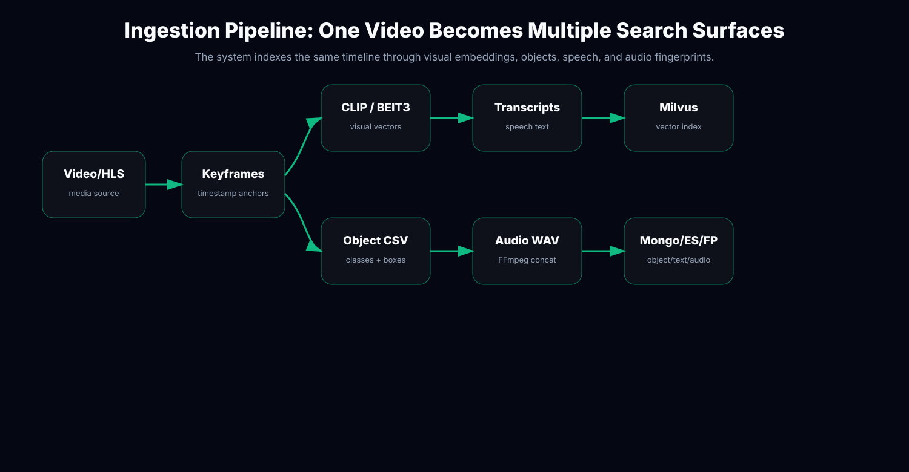
The Flask search API accepts text queries, object filters, and audio/transcript constraints. Each path returns candidate keyframes. The system intersects result sets by `(video_id, keyframe_index)` and ranks by fused scores when visual retrieval participates.
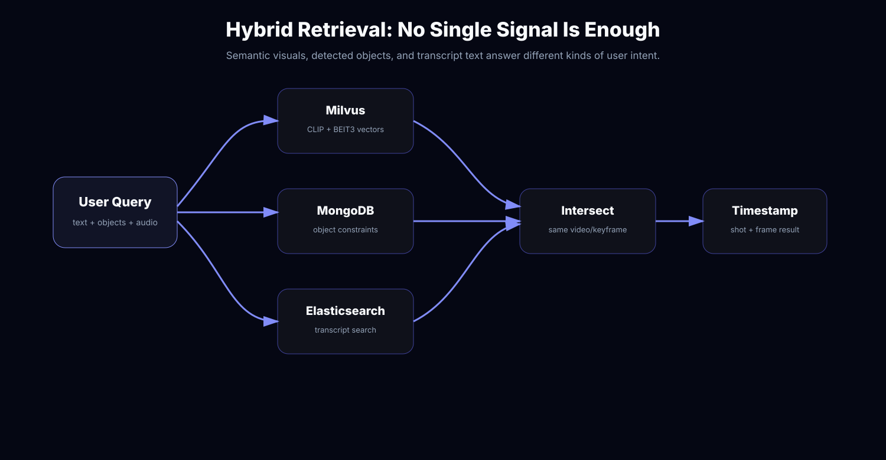
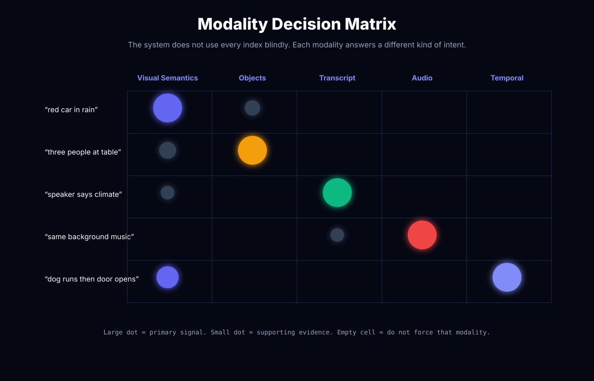
CLIP and BEIT3 queries are encoded separately, searched against separate Milvus collections, normalized, merged by keyframe, and fused with equal weights. The result is a ranked list of candidate keyframes with `fused_score`.
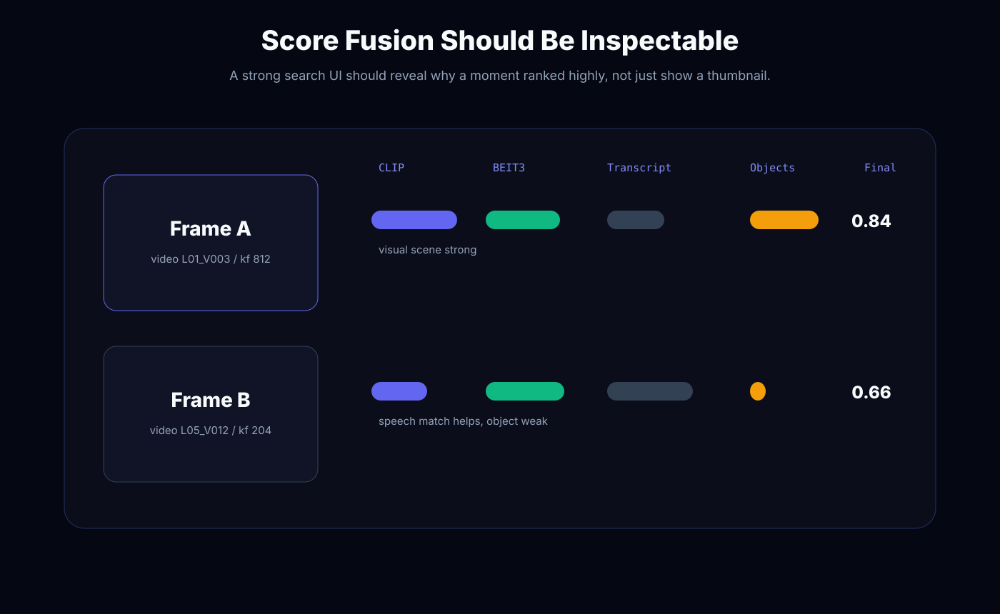
fused_score = 0.5 * normalized_clip_score + 0.5 * normalized_beit3_score
key = (video_id, keyframe_index)
The `temporal_search` method runs each query independently, groups candidates by video, chooses an anchor query, then walks backward and forward to find neighboring keyframes inside `MAX_FRAME_GAP`. This turns separate top-k lists into a temporal chain.
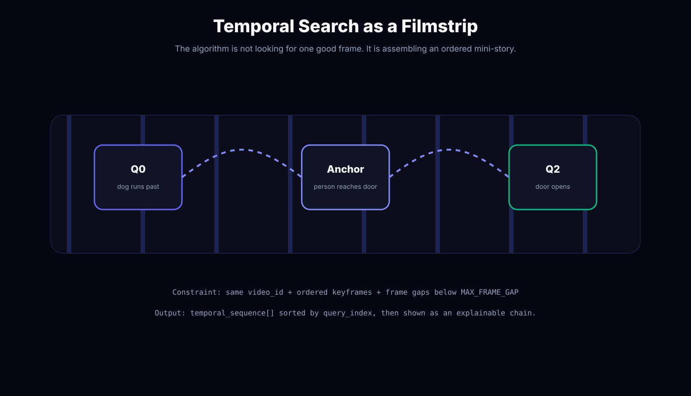
MongoDB stores object detections per keyframe. The object search path uses aggregation with `$filter`, `$size`, `$gte`, and `$lte` to enforce label, confidence, minimum instance, and maximum instance constraints.
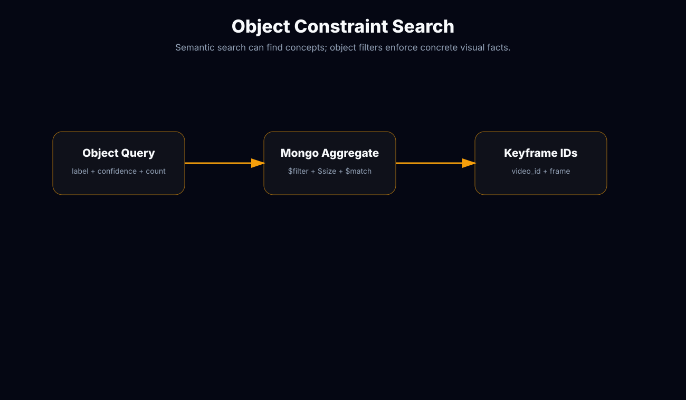
Transcript CSV rows are cleaned, aligned to closest keyframes by FPS, and indexed in Elasticsearch with a custom analyzer. Querying combines fuzzy match and phrase match so spoken terms can retrieve timestamped frames.
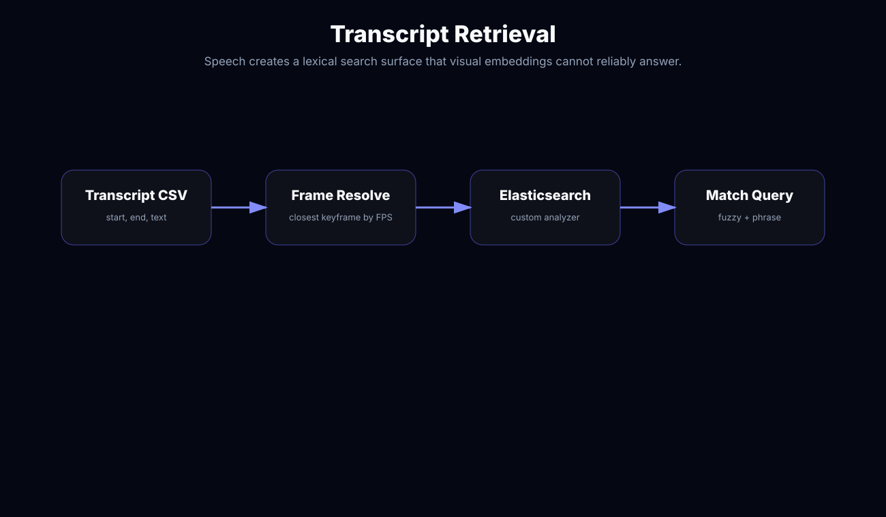
The fingerprint path concatenates HLS `.ts` segments with FFmpeg, converts them to mono WAV, extracts audio hashes, and stores them in a fingerprint database. This supports matching sound patterns even when transcript text is unavailable or irrelevant.
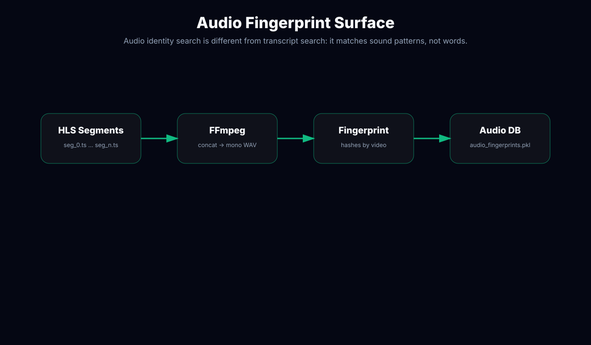
The app maps each keyframe hit to FPS, shot boundaries, HLS playback data, and evaluation submission payload. This is where raw search hits become product results.
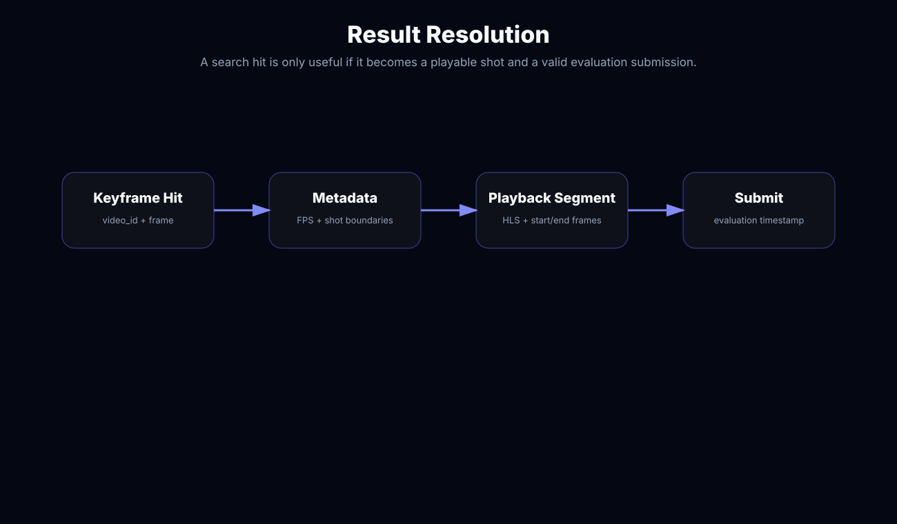
Useful observability should track not just server health, but modality contribution, recall@K, stage latency, empty intersections, timestamp errors, and index freshness.
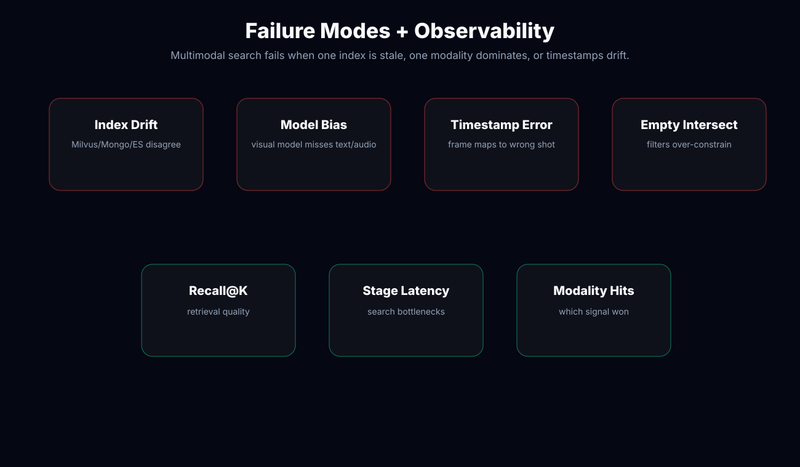
Replace placeholders with app captures: semantic query, object-filter query, transcript query, temporal sequence query, HLS playback, and evaluation submit flow.

Separating modalities made the system explainable. Visual semantics, object constraints, transcripts, and audio fingerprints can each answer a different class of user intent.
The next iteration should add reciprocal-rank fusion, modality contribution tracing, offline evaluation sets, ingestion versioning, and automatic fallback when intersections are over-constrained.
I build retrieval systems that combine vectors, metadata, transcripts, objects, and temporal reasoning into usable product search.
Discuss your search bottleneck mythonggg@gmail.com